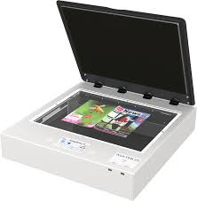
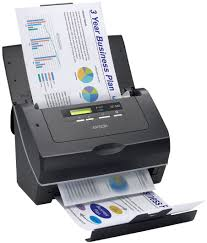
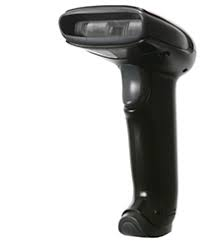
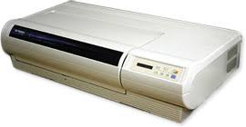

تكنولوجيا المعلومات
معدات الكمبيوتر والبيئة
Semester two
عبداللطيف| الاسم |
Tharsday/march/28/2019 | تاريخ البحث |
اجهزة المسح الضوئية | عنوان البحث |
د.محمد البشير | استاذ المادة |
| |
يعد الماسح الضوئي أحد أهم ملحقات الكمبيوتر وكان من المعدات المكتبية المهمة خلال السنوات القليلة الماضية انتشرت تقنية المسح في كل مكان.
ما هو الماسح؟
الماسح الضوئي هو آلة تستخدم في إدخال الصور والطبيعة الرسومية إلى الصورة الرقمية لتتناسب مع طبيعة الكمبيوتر وحتى
من السهل تخزينه داخل الملف واستدعائه عند الحاجة ، يشبه الماسح الضوئي ناسخ النسخ الخاص به. أنواع الماسحات الضوئية
الماسحة الضوئية المسطحة

Sheetfed Scannersماسحات ضوئية

ماسحات محمولة

ماسحات ضوئية


كيف يلتقط الماسح الصورة ؟:
- يتم وضع المستند مقلوبًا على لوح زجاجي شفاف.
- سيضيء مصدر الضوء بضوء أبيض على المستند.
- المرايا تعكس الصورة المنعكسة من وثيقة إلى أخرى - آخر امرأة تنقل الصورة إلى عدسته.
- العدسة بدورها تسلط الصورة على مجموعة من الفلاتر
- تنتقل الصورة من المرشحات إلى CCD وتصدر CCD إشارة كهربائية تعكس الضوء الساقط عليها.
- يتم نقل الشحنة الكهربائية الناتجة عن CCD إلى ADC ، والذي يحول الإشارة الكهربائية المستقبلة إلى مجموعة من النيوترونات والأصفار لإرسالها إلى الكمبيوتر.
- يتم تحريك نطاق المسح الضوئي بالكامل (مصدر الضوء ، العدسة ، المرايا و CCD) لتمرير المستند بأكمله باستخدام محرك متدرج.
- يتم إرسال مجموعة الأبجدية الرقمية والأصفار التي تم إنشاؤها بواسطة ADC إلى الكمبيوتر.